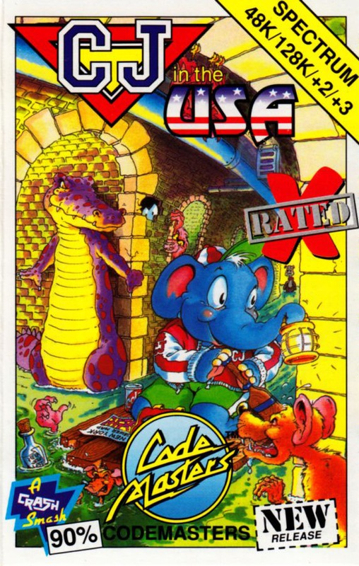
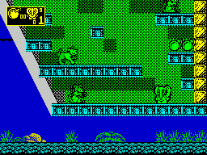

CJ's American Antics


{kind=link}

| Publisher: | Code Masters |
| Price: | £3.99 |
| Year: | 1991 |
| Source: | CRASH, Issue 92 |

After the trials of the original game, little Columbus Jumbo Elephant took a holiday in the States. But while he was out of his native Africa, the dastardly villain of the first game, known only as the Hunter, sneaked into CJ’s patch and kidnapped his brothers and sisters! Coo.
So, with a trunk full of peanuts and his trusty brolly tucked under his arm (for any nasty long drops), CJ goes off the rescue. Like the first game, it’s a multi-level affair with plenty of platforms for pachydermic perambulations and it can cope with two players simultaneously.
Of course, there are plenty of attackers who all want to send CJ to the great elephant graveyard in the sky. These include dogs, American footballers, TJ Hooker-style police officers (black hair dye optional), Red Indians and mice.

UP YER BUM!

Additionally, immobile spikes wait to ventilate CJ’s botty and other assorted obstacles hinder his progress. The route is often very tortuous indeed.
As well as his unlimited supply of peanuts, CJ can pick up and use bombs dropped by deceased attackers. Also food can be collected from popped baddies for a hefty bonus. Dotted around the scrolling-all-over-the-place landscape are your siblings, these have to be rescued, simply by touching them.
There you have it: kill the opponents, save your brothers and sisters, find the exit from each level, destroy the end-of-level baddies and finally kill the Hunter once and for all. Although this isn’t an easy task by any means — the attackers in the original game were nasty but are boy scouts compared to some of these swines.
The graphics are little short of brilliant. Character sprites are all monochrome but well detailed; the only slight fly in the ointment is that some backgrounds are so garish you can’t see attackers coming. But that’s a small price to pay for a game that scores so highly in the graphics and playability stakes. To the software shop this instant (and don’t spare the horses)!
MARK — 91%
CJ’s American Antics is one of the best platform games to have appeared on the Speccy this year. Both the graphics and sonics (especially in 128K mode) are excellent, the title tune is toe-tapping and CJ’s elephantic antics are hilarious. The attackers are vicious but they’re varied, wonderfully drawn and animated. My personal favourites are the ghosts who run around with bed sheets on their heeds. The puzzles are as tough as the baddies — if I had ten pence for every time CJ got spiked I would be very rich by now. But the game is much too cute to be annoying, so CJ is worth the price tag. Even if it is just to sing ‘Nellie the Elephant’ in an annoyingly loud voice.
WILL — 90%
RATING
A stunning platform game — playable and good looking!
| Presentation: | 90% |
| Graphics: | 89% |
| Sound: | 83% |
| Playability: | 88% |
| Addictivity: | 90% |
| Overall: | 91% |